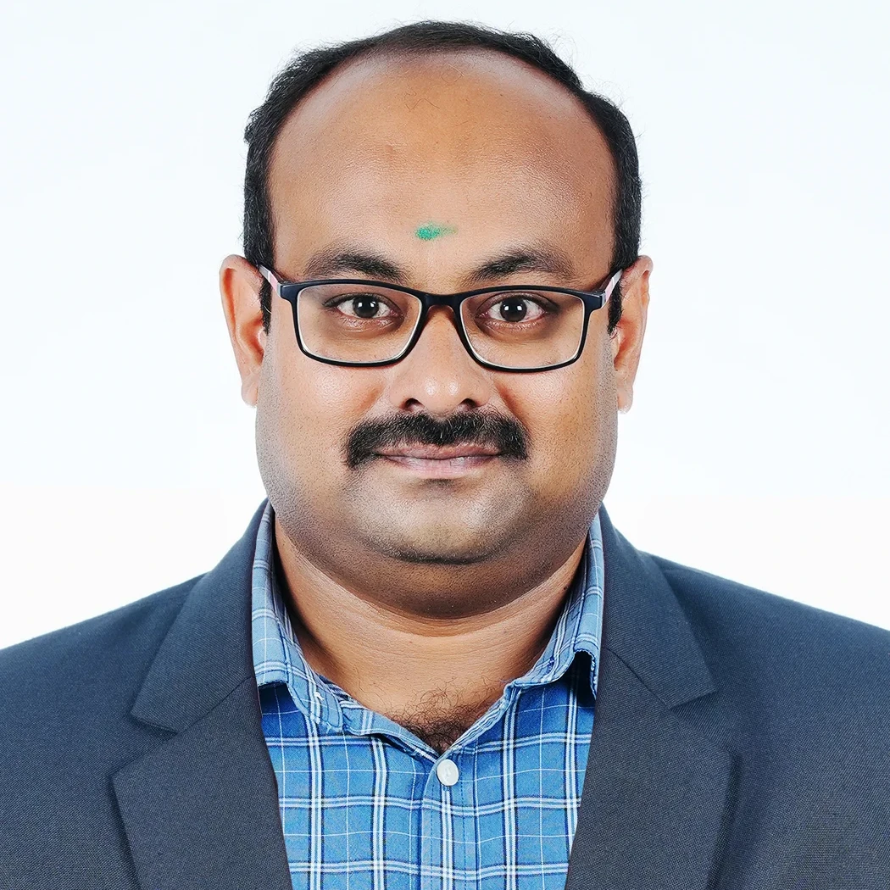

Knowledge • Skill • Success
Knowledge • Skill • Success
Mechatronics Engineering course was designed specially to cater the needs of modern industries where there is a requirement of personnel with skill in multiple fields such as Mechanical, Automobile, Electrical, Electronics and Automation Technologies.
Our curriculum is designed to impart both strong foundational theories and intensive practical skills in the laboratories. Students gain comprehensive hands-on operational experience with industry-standard machinery, instruments, and software systems.

HOD
"Welcome to the Department of Mechatronics Engineering. The Department of Mechatronics Engineering was established in 2005 to cater to the needs of modern industries requiring personnel skilled in Mechanical, Automobile, Electrical, Electronics, and Automation Technologies. Our department is committed to imparting high-quality technical education and hands-on practical skills to prepare students for the rapidly evolving smart manufacturing and robotics sectors. With our state-of-the-art laboratory facilities, including multi-axis robots, process control DAQ systems, and hydraulics & pneumatics kits, we ensure that our students receive excellent training. I encourage all students to make the best use of these opportunities and strive for excellence in their careers."